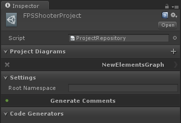
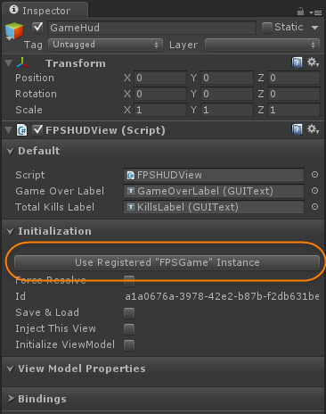

| Getting Started > Upgrading to 1.5 from 1.4 |
1.5 Is a rather large update. So upgrading to 1.5 for some projects may not be feasible. It would be worth it to watch some of the tutorials and learning some of the new concepts of 1.5 before attempting to upgrade a project. The 1.4 package is included with 1.5 so that if a project is simply to far along to upgrade, the version is still available. Most projects should be able to update rather smoothly depending on how well the project sticks to the uFrame way of doing things.
0: BACKUP/BRANCH you're project. Make sure you can successfully upgrade to 1.5 before attempting. Especially if you are working on a time sensitive project.
1: Completely remove the "uFrameComplete" folder.
2: Import the uFame 1.5 Package into the Unity Project.
In Previous versions of uFrame the bind methods used to bind various Unity specific features no longer have a lambda method requirement.
The compiler will most display errors or warnings if you are using any of these methods. In order to fix this just remove the lambda syntax.
| BindingMethodsUpdate |
Copy Code |
|---|---|
// Old Syntax this.BindKey(()=>FPSWeapon.NextZoom, KeyCode.LeftShift); // New Syntax this.BindKey(FPSWeapon.NextZoom, KeyCode.LeftShift); | |
uFrame 1.5 has a new way of combining multiple diagram files into a single repository aka "Projects". So we need to create a project to import our 1.4 diagrams files into.
Navigate to the folder of your diagram file. On the folder right-click and choose uFrame->New uFrame Project
Rename it something more meaningful.
Now click on the project file and look in the inspector.
By Default a graph file is already created for you. You can remove this by click on the 'X' next to it in the "Project Diagrams" section.
Once it has been removed. Lets now add your existing diagram file. You can do this by clicking the '+' button on the "Project Diagrams" section header.
In the dialog select the diagram file you wish to include.
Note: Do not set a root namespace until you have completed the upgrade process.
The diagram needs to update some things internally. Luckily we've added a "Upgrade Now" button that will allow you to easily do this. Click the button.
This process will do quite a few things in order to convert to the new ways of doing this. Lets examine these:
Registered Instances:
In 1.4 a SIE was basically just a registered instance that had some special code generation features. All SIE element's from your 1.4 diagram will become a registered instance on it's parent subsystem.
View Connections:
The upgrade process does the best it can to reconnect the view to their elements, but in some cases it doesn't work as expected. Double-check all of the connections in your diagram to make sure things are back to normal.
View Bindings:
In 1.5 they way bindings work has completely changed both in generated code and in they way they are stored. The upgrade process will attempt to add the bindings based on the generated code. Usually this part of it is pretty accurate, but it wouldn't hurt to double check them as well.
View Components:
In 1.4 View-Components where connected directly to the Element. In 1.5 you now connect view components directly to a view. So to fix this navigate to anywhere you have a view-component you'll need to reconnect them to the view that requires them.
Once you have carefully completed step 5: Save & Compile your diagram. This undoubtedly create some errors in your console. Don't be to alarmed as we'll go through them in the next steps.
Designer Files have a new location. They are now stored under a "_DesignerFiles" Folder. So if there are any remaining diagram files in the project folder. Simply delete them.
At this point you should have some errors that will be fairly specific to you're project. We'll cover the main ones in the next steps.
Since there is no longer a "Single Instance Element" concepts in 1.5 All controllers should mimic the way multi-instance controllers where generated in 1.4. This makes all controllers consistent moving forward.
To do this you'll need to modify all command implementations for these outdated controllers. You simply just need to add a parameter for the sender ViewModel. Here is an example:
| UpgradeControllerCommands |
Copy Code |
|---|---|
// Old way public override void MainMenu() { base.MainMenu(); } // New Way public override void MainMenu(FPSGameViewModel fPSGame) { base.MainMenu(fPSGame); } | |
In uFrame 1.5 yield commands have been removed to greater support external compatibility. This transition will be painless once you understand the new UniRX features. In order to create time based functions you can use Observable.Timer, and Observable.Interval. These are a more generic implementation of time based operations that can be recreated elsewhere (I.E. Server Implementations)
| Fixing Yield Commands |
Copy Code |
|---|---|
// Old Way public override IEnumerator Reload(FPSWeaponViewModel fpsWeapon) { fpsWeapon.State = FPSWeaponState.Reloading; yield return new WaitForSeconds(fpsWeapon.ReloadTime); fpsWeapon.Ammo = fpsWeapon.RoundSize; fpsWeapon.State = FPSWeaponState.Active; } // New Way public override void Reload(FPSWeaponViewModel fpsWeapon) { fpsWeapon.State = FPSWeaponState.Reloading; Observable.Timer(TimeSpan.FromSeconds(fpsWeapon.ReloadTime)) .Subscribe(_ => { fpsWeapon.Ammo = fpsWeapon.RoundSize; fpsWeapon.State = FPSWeaponState.Active; }); } | |
On your views that bind to a collection of view-models. you'll need to update the signature of the Added method and the RemoveMethod. If you aren't using these you shouldn't worry about it.
| ViewCollectionOverrides |
Copy Code |
|---|---|
// Old way public override void EnemiesAdded(FPSEnemyViewBase item) { //...etc } public override void EnemiesRemoved(FPSEnemyViewBase item) { //...etc } // New Way public override void EnemiesAdded(ViewBase item) { //...etc } public override void EnemiesRemoved(ViewBase item) { //...etc } | |
The Create{Collection}View method has also been modified as just an empty method. The uFrame code generator for this binding no longer generates the default implementation for you. This is for consistency reasons and to remove any black magic. Luckily to recreate this method it's nothing more than the following:
| CreateWeapon |
Copy Code |
|---|---|
public override ViewBase CreateWeaponsView(FPSWeaponViewModel fPSWeapon) { return InstantiateView(fPSWeapon); } | |
Now navigate to all the scenes where you have views that are single instance views. The should now be registered instances, so any view that previously used an SIE ViewModel. You'll just need to click the button at the top of the Initialization section on the view in order to use that instance.
